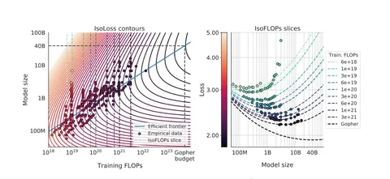

Сегодня разберём статью 2022 года от DeepMind, известную также по названию модели Chinchilla. Работа посвящена проблеме правильного распределения фиксированного компьюта между увеличением размера модели и числа токенов, на которых она учится, в домене языковых моделей. Для связи этих трёх величин существует аппроксимация C = 6ND, где C — компьют, N — число параметров, D — число токенов в датасете. Оптимальные N и D масштабируются как C^a и C^b соответственно, где a + b = 1. Задача — найти a и b.
Работа мотивирована статьей 2020 года от OpenAI — Scaling Laws for Neural Language Models, в которой авторы заключили, что большая часть компьюта должна быть аллоцирована под масштабирование самой модели (a > b). Исследователи из DeepMind приходят к другому выводу. Они выводят законы масштабирования тремя разными способами, и все три приводят к схожим результатам (a ≈ b ≈ 0,5).
Подход первый: строят график в осях FLOPs — лосс для нескольких моделей с числом параметров от 75M до 10B. Каждому числу флопсов ставится в соответствие точка с минимальным лоссом, для которой известно, какому размеру модели и числу пройденных токенов она относится. Полученные точки переносят на графики в осях FLOPs — N и FLOPs — D, регрессируют их прямой (в прологарифмированных осях), угол наклона которой задаёт a и b. В итоге: a = b = 0,5.
Подход второй: фиксируют компьют и варьируют число параметров, что автоматически задаёт число токенов для обучения. Для каждого фиксированного компьюта находят такую точку, для которой уменьшение или увеличение числа параметров приводит к ухудшению финального лосса. Снова регрессируют эти точки в осях FLOPs — N и FLOPs — D, получая a = 0,49 и b = 0,51.
Подход тертий: здесь авторы моделируют зависимость L(N, D) финального лосса от размера модели и числа пройденных токенов, используя при этом все результаты (L_final, N, D) из первых двух подходов. Благодаря этому выражению, зная компьют, можно найти оптимальное число параметров, которое будет ординатой точки касания вертикальной прямой к линии уровня L(N, D) в осях FLOPs — N (левый график). a и b оказываются равными 0,46 и 0,54 соответственно.
Главный вывод статьи, — число параметров в модели и число токенов в датасете должны масштабироваться равномерно (то есть как квадратный корень из компьюта). Например, при увеличении компьюта в четыре раза обе величины должны вырасти в два раза.
Ещё один интересный вывод авторов — модель Gopher (280B) обучили на недостаточно большом датасете. В качестве доказательства обучают в четыре раза меньшую модель Chinchilla (70B) на в четыре раза большем числе токенов, и эта модель оказывается значительно лучше Gopher.
@RecSysChannel
Разбор подготовил
